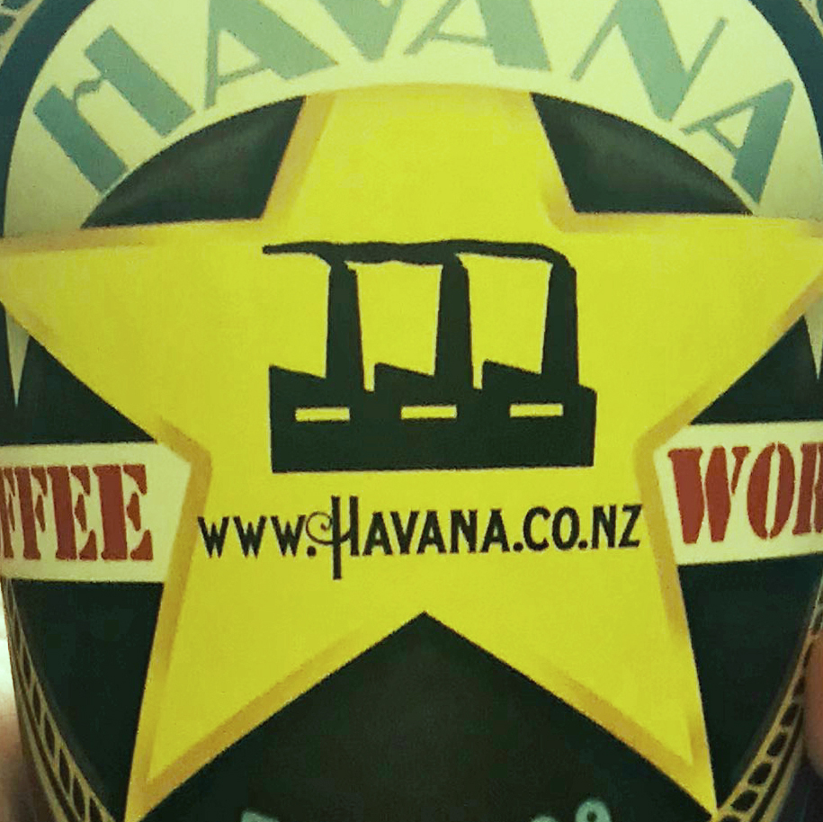

In the last few decades, social media has allowed us to share information, ideas, interests and other forms of expressions through networks, and is still continuing to do so today. There is no doubt that it is a thriving network here in our city because everywhere we go, we are surrounded by so many signs linking to social media networks such as instagram, facebook and other company sites.
The two most popular social media networks:
Social Media in CBD Wellington
Below are some places and stores around Central Wellington which advertise their business and company websites as well as social media networks through signs and products.

Havana Coffee Cups
Midnight Espresso is Wellington's original "all-day" and "late-night" cafe mainly specialising with their delicious coffees. Their takeaway cups have an exquisite design that includes their coffee provider's website, Havana.
To find out more about their social media network, click the link below: https://havana.co.nz/
Dance Company Website
This vintage dance company located in Cuba street, literally have their social media network site written on a sign for everyone to see! This is one example of how easy it is to spot markings of networks around the city and a reminder of how it is everywhere we go making it a big part of our everyday lives.
Just like the previous company, this bar located in Lambton Quay had also showcased not only their website -but also their social media networks such as facebook and twitter! Due to these social media network's popularity, it makes it easier for the busiess to advertise their menus and specials online, thus allowing them to reach out to their target customers a lot better.
Networks which have been formed through social media has really changed the way that our city (and the rest of the world) interact and/or communicate with one another. We are surrounded by social media networks everywhere we go in life, whether if we see it on objects as small as sugar packets and coffee cups, or bigger signs hung up outside shops and cafes. It is an ongoing thriving network that helps us connect with one another due to the marks it leaves us in our day-to-day lives.
Social Media
In the last few decades, social media has allowed us to share information, ideas, interests and other forms of expressions through networks, and is still continuing to do so today. There is no doubt that it is a thriving network here in our city because everywhere we go, we are surrounded by so many signs linking to social media networks such as instagram, facebook and other company sites.
The two most popular social media networks:
Social Media in CBD Wellington
Below are some places and stores around Central Wellington which advertise their business and company websites as well as social media networks through signs and products.
Havana Coffee Cups
Midnight Espresso is Wellington's original "all-day" and "late-night" cafe mainly specialising with their delicious coffees. Their takeaway cups have an exquisite design that includes their coffee provider's website, Havana.
To find out more about their social media network, click the link below:
https://havana.co.nz/
Dance Company Website
This vintage dance company located in Cuba street, literally have their social media network site written on a sign for everyone to see! This is one example of how easy it is to spot markings of networks around the city and a reminder of how it is everywhere we go making it a big part of our everyday lives.
Below is a link to the website as shown on the sign:
www.fullswing.co.nz
Social Media Networks of a Bar
Just like the previous company, this bar located in Lambton Quay had also showcased not only their website -but also their social media networks such as facebook and twitter! Due to these social media network's popularity, it makes it easier for the busiess to advertise their menus and specials online, thus allowing them to reach out to their target customers a lot better.
Listed below are links to all of their websites and social media networks:
https://www.facebook.com/oldbaileybar
https://twitter.com/oldbaileybar
http://www.theoldbailey.co.nz/
Links:
Networks which have been formed through social media has really changed the way that our city (and the rest of the world) interact and/or communicate with one another. We are surrounded by social media networks everywhere we go in life, whether if we see it on objects as small as sugar packets and coffee cups, or bigger signs hung up outside shops and cafes. It is an ongoing thriving network that helps us connect with one another due to the marks it leaves us in our day-to-day lives.
To find out more about social media networks and how it affects our lives, check out the websites and provided below: https://www.investopedia.com/terms/s/social-networking.asp
https://www.lifewire.com/what-is-social-media-explaining-the-big-trend-3486616
Find out more